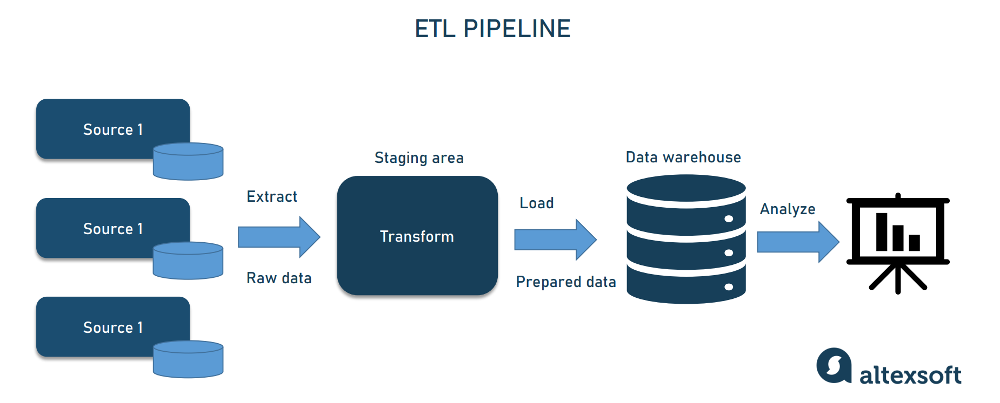

The Purpose of a Software Engineer
Let's start with a general definition of what a software engineer is. As per computerscience.org: "Software engineers design and develop computer programs and applications." Software engineers often work with system programmers, analysts, and other engineers to design systems, project capabilities, and determine performance interfaces.
The general responsibility that lie with a software engineer include:
1. Designing and maintaining software systems
2. Evaluating and testing new software programs
3. Writing and testing code
4. Produce specifications and determine operational feasibility
How Software Engineering Works
The general concept of how data engineering works is to take data from a source
move it to a destination for analysis. AltexSoft
has an in-depth explanation as to how data engineers work.
To break down how data engineering works, we will start with an example.
On a typical team you can have a data scientist, an analyst, perhaps a marketing
specialist, and a project manager. Currently, the analyst is doing a lot of heavy
lifting by manually moving the datasets into Excel to create spreadsheets and
dashboards. When a data set is small, this is not a huge inconvenience.
However, as we add additional data to be examined it becomes more of a nuisance
to manually move data from different sources. The automation of moving data from
one source to another is where data engineering begins.
This automation is called a pipeline. The most common format you will find is an
Extract Transform Eoad (ETL)
pipeline. Generally, the extraction is through an API connection. Once the data is extracted,
you can begin transforming it to meet business needs. Now that the data is validated and
formatted correctly, we can load it into a database.

Another process data engineers must be comfortable with is data warehousing. This is the place
that all the central data is stored and organized. Now, this warehouse concept just sounds
like a database. However, the purpose of a warehouse is that it will be optimized to run
complex analytical queries as opposed to simple transactional queries like a database would.
Data engineers also often work closely with data scientist. When a request to a data scientist
has been made to predict a future outcome, it becomes the responsibility of the data engineer
to create a custom pipeline for the scientist. A custom pipeline is often needed as the
request is usually a one-off task.
Exercise: What is a Data Engineer?
Find a place you will be keeping track of all your work. In that area, please save all the work you do during this internship for future reference. Some examples that have been used in the past are Miro, Google Drive, and GitHub. In a paragraph or two describe what the purpose is of a data engineer and create a diagram demonstrating their workflow.